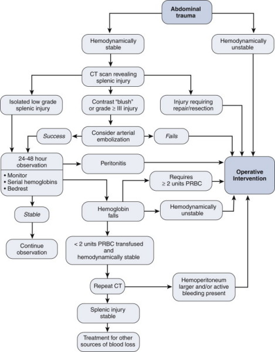
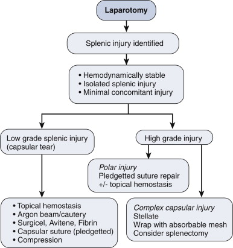
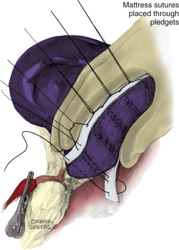

Splenic
trauma
Epidemiology
· 20% of
splenectomies are 2° iatrogenic damage
· Most common
injured organ following blunt trauma
— Isolated in 30%
Aetiology
· Accidental
— Blunt
30-60% associated
intra-abdominal
injury
— Penetrating
· Iatrogenic
· Delayed rupture – occurs in less than 1% of
patients with splenic injury
— 50%
within 1/52
— 75%
within 2/52
— Can
occur ³ 4/52
· Spontaneous rupture
— Usually
2° to trivial
injury
— Most
commonly as
complication of diseased spleen
Malaria
Infectious
mononucleosis
Clinical
· Signs depend
on degree of blood loss
· Lower rib #
· Kehr’s sign:
pain referred to left shoulder
Ix
· Hb, WCC, plts
· AXR
— Immobile L diaphragm
— Enlarged splenic
shadow
— Medial
displacement gastric shadow
/ splenic flexure
· CT
— Gold standard
· DPL
— In unstable
patient
Staging
American
association
of surgical trauma
|
Grade |
Subcapuslar
Haematoma |
Intraparenchymal
haematoma |
Parenchymal Laceration |
Vascular
Injury |
|
I |
Subcapsular
<10 % of surface area |
|
Non-bleeding
<1 cm depth |
|
|
II |
Subcapsular
<50 % |
<5cm |
Bleeding
<3cm depth |
|
|
III |
Subcapsular
>50 %. Expanding ruptured with active bleeding |
>5cm or
expanding |
>3cm
involving trabecular vessel |
|
|
IV |
|
Ruptured
intraparenchymal with active bleeding |
Involves
segmental vessel |
>25%
splenic devascularization |
|
V |
|
|
Shattered |
Hilar
avulsion or complete splenic devascularization |
v Advance 1 stage
for multiple
injuries up to grade III
· Patients who
are unstable require laparotomy
· The garding
system is based on CT findings.
· Grade I-III
injuries can frequently (95%) be managed non-opertaively.
· Grade IV
injuries often require operative intervention
· Grade V
injuries require immediate surgery
Which patients can
be managed by embolization
· Haemodynamically
stable but requiring
transfusion for active bleeding.
· Here embolization
can be used if the bleeding
vessel can be seen on angio.
Which patients
should be managed by surgery?
· Haemodynamically
unstable
· Persistent
coagulopathy despite attempted
correction
· Having laparotomy
for other reason.
What are the indications for failure of
non-operative Mx
Haemodynamically unstable, worsening pain,
persisting bleeding
(requiring Tx), Progressive injury on CT.
Mx
· ABCDE
· Resus
Conservative
· CT scan
· Close
monitoring
— HDU for first 48
hours
· Daily Hb
· Restrict
activity for 4-6/52
· Avoid contact
sports 6/12
· Weekly scan to
monitor resolution
Surgery
Indications
· Cardiovascular
instability
· Laparotomy for
additional organ damage
· Ongoing
bleeding
· Failed
conservative Rx
— Up to 30%
Splenectomy
· Indications
— Concurrent injury
— Unstable patient
— Irreparable
injury
— Diseased spleen
& trauma
Splenorrhaphy
· Can be
considered if laparotomy for other cause
· 30-90% splenic
injuries suitable
· Contraindications
— Extensive hilar
injuries
— Extensive splenic
fragmentation
— Avulsion
— Peritoneal
contamination
— Diseased spleen
· Critical mass »30%
Operative
· Temporary haemorrhage control: packing and
compression
· Completely mobilize the spleen – can do this
with blunt dissection by
dividing the splenorenal and splenophrenic to bring the spleen
and tail of
pancreas to midline. · Vascular control of
the splenic hilum with fingers or a soft bowel clamp.
· Assess whether to repair or remove.
· In favor of removal: heavy trauma burden,
significant blood loss, older
age of the patient, lack of experience of splenic preservation.
· To remove the spleen, clamp and ligate the
splenic vessels from
posterior.
· Stay close to
spleen to avoid tail of
pancreas.
· The gastrosplenic
vessels are then ligated.
Stay close to splenic hilum to avoid the stomach wall.
· Divide the spleen.
Inspect for bleeding
Splenic
preservation – local pressure and topical haemostatic with argon
beam
coagulation for capsular tear.
· Capsular suture
using straight PDS suture and
Teflon bolster
· Passing a TA90
with 4.8mm staples across the
injured area and slowly closing the stapler.
· If one attempt at
splenic repair fails then
remove the spleen.
Complications
post spleenectomy
Immediate:
Bleeding
Early:
Subphrenic abscess, left basal pneumonia, post splenectomy
thrombocytosis,
pancreatic fistula, gastroparesis.
Late: Post
spleenectomy sepsis – give pneumococcal, meningococcal, HiB and
influenza
vaccines 2 weeks after spleenectomy. The risk is greatest in
children who
should receive prophylactic penicillin. Adults should be given
advice about
infection signs and give Abx to take after the earliest sign of
infection